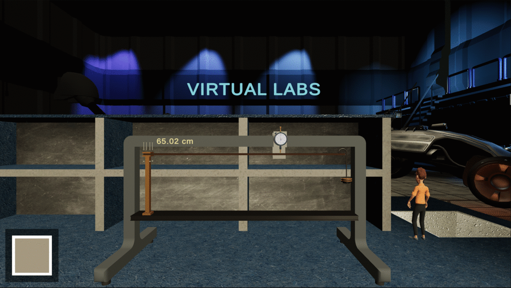
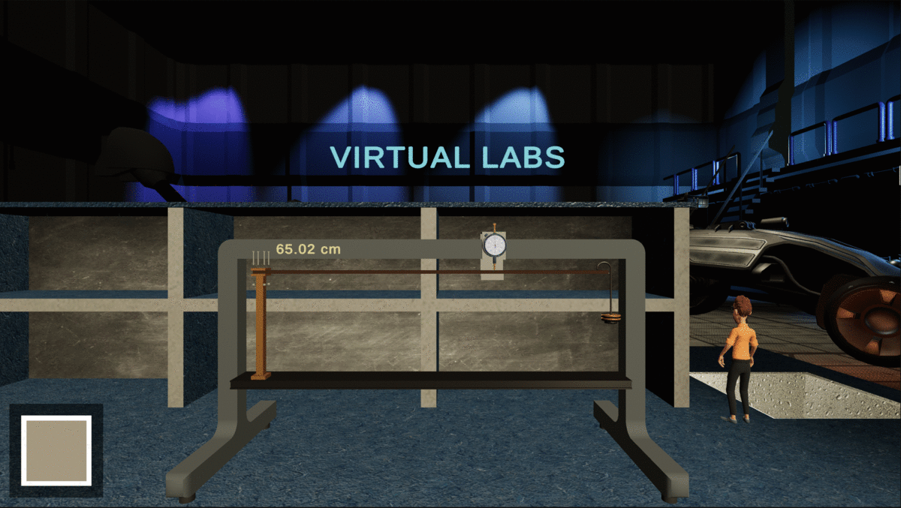

I investigate Human Motion with Artificial Intelligence
I dig the Science behind Teaching & Learning
I liberate Ideas with Entrepreneurship
PhD in Mechanical, Materials and Aerospace Engineering (2019 - Present), University of Liverpool, UK
Wearable Sensing for Non-Invasive Human Pose and Movement Analysis During Sleep
Under the supervision of Paolo Paoletti and Frans Coenen
MEng in Mecharonic Engineering (2015 - 2019), University of Nottingham, UK
Curriculum Vitae
Omar.Elnaggar@liverpool.ac.uk
7 Lower Gill Street, Liverpool, L3 5BB, UK
Research
Human Motion Analysis for Healthcare
Studying the posture and motion of musculoskeletal systems finds many applications that bring about a higher quality of life to both healthy and physically disabled adults. My research focuses on the creation of AI-empowered wearable sensors which analyse human sleep posture potentially linked to the development of certian musculoskeletal morbidities.
Augmented Reality and Motion Capture
Body Motion Capture

Facial Motion Capture

Human motion capture is bewildering for some of us. Augmented Reality (AR) is increasingly becoming a universal and exciting language, turning information into experiences. I believe AR is an eminently useful tool to communicate my research to everybody; the technical expert and the enthusiast.
Biorobotic Prostheses

Prosthetics are faced by many challenges such as limited dexterity and cumbersome control scheme. This individual project successfully delivered a highly biomimetic, bio-robotic hand prosthesis. Structurally, the prosthesis consist of rigid and soft parts which were additively manufactured via multi-material 3D-printing. The design is inspired from a laser/MRI-scanned cadaver hand. Additionally, a myoelectric control scheme is implemented to allow for different hand postures/grasps as intended by the amputee.
Natural Language Processing

State-of-the-art speaker identification systems have achieved accuracies up to 100% with long-duration utterances which are not always available. In this work, a novel speaker recognition approach is proposed using short-utterance recordings (<1 sec). This is made possible with the parametric AI-based dimensionality reduction which produced the above 3D visualisation of speaker-dependent features, demonstrating inter-speaker separability.
Teaching
Evaluation of Knowledge Exchange (KE) in Classrooms using AI

Little attention is paid to the value of incorporating KE in classroom teaching, leaving students out of the current KE pipeline. This project attempts to meeasure the effectiveness of the KE process in which teacher-to-student and peer interactions play a major role. A coursework-based framework was designed such that two checkpoints reflect a before-and-after abrupt change scenario which is common in industrial environments. Then, a survey-based approach was adopted to measure students’ knowledge at each checkpoint. With the aid of an AI-based visualisation technique, we are able to extract insights from a low-dimensional map, supported with standard metrics, to gauge the individual’s knowledge and how they are positioned within the entire population of students.
Startup: Engineering Virtual Labs
of UCL's "Build Your Own Business 3" Pitch Contest 2021
(aka Launch £10,000 Programme)
 

COVID-19 disrupted the higher education landscape which consequently enforced a shift towards a more blended teaching and learning approach and accelerated the digitalisation of education. At the core of digital education is the element of practical sessions which brought teachers to think about how to maintain student engagement in the digital world. Motivated by the limited available solutions, I took the initiaive of building specialised virtual labs for engineering courses empowered by 3D Game Development and gamification. My work received positive feedback from academics in/out of the United Kingdom, therefore I am currently working on a startup company which should launch soon.
Experience as a Graduate Teaching Assistant (GTA)
- Taught undergraduate students on three programmes: mechanical, aerospace and civil engineering.
- Delivered both face-to-face and online teaching sessions.
- Demonstrated a practical-intensive engineering module (38 lab sessions a year).

@ School of Engineering, University of Liverpool, UK
Publications
Research Publications
- O. Elnaggar, R. Arelhi, F. Coenen, A. Hopkinson, L. Mason and P. Paoletti, KIDS: Kinematics-based (In)activity Detection and Segmentation in a Sleep Case Study, Scientific Reports, 2022. [under review]
- O. Elnaggar, F. Coenen, A. Hopkinson, L. Mason and P. Paoletti, Sleep Posture Classification: From In-Silico Proof-of-concept to Validation with Wearable Sensors, Insigneo Showcase, United Kingdom, 2022. [ Link to Poster]
- O. Elnaggar, F. Coenen, A. Hopkinson and P. Paoletti, Generalised Joint Kinematic Analysis and 3D Visualisation: A Human Wrist Case Study, BioMedEng22 Conference, United Kingdom, 2022. [ Link to Abstract]
- O. Elnaggar, F. Coenen, A. Hopkinson, L. Mason and P. Paoletti, Sleep Posture One-Shot Learning Framework Using Kinematic Data Augmentation: In-Silico and In-Vivo Case Studies, Information Fusion, 2022. [accepted with revision, Link to preprint]
- O. Elnaggar, F. Coenen, A. Hopkinson, and P. Paoletti, Perception of Sleeping Poses Using Extremity Limb Orientations, BioMedEng21 Conference Proceedings, United Kingdom, 2021. [ Link to Abstract]
- O. Elnaggar, F. Coenen, and P. Paoletti, In-Bed Human Pose Classification Using Sparse Inertial Signals, 40th International Conference on Innovative Techniques and Applications of Artificial Intelligence, Springer, Cham, pp. 331-344, 2020. [Link to Paper]
- O. Elnaggar, F. Coenen, and P. Paoletti, Wearable Sensing For Non-invasive Human Pose Recognition During Sleep, AI for Future Digital Health Workshop, SGAI 40th International Conference on Artificial Intelligence, 2020. [Link to Video]
- O. Elnaggar, and R. Arelhi, A New Unsupervised Short-Utterance based Speaker Identification Approach with Parametric t-SNE Dimensionality Reduction, International Conference on Artificial Intelligence in Information and Communication (ICAIIC), Japan, pp. 092-101, 2019. [Link to Paper]
- O.Elnaggar, and R.Arelhi, An Unsupervised Speaker Identification Approach: A Breakthrough 3D Visualization of High Dimensional Features, 21st International Conference on Artificial Intelligence and Pattern Recognition (ICAIPR), Singapore, 2019. [Link to Paper]
Teaching Publications
- O. Elnaggar, and R. Arelhi, Game-based Learning in Engineering Education: How can we reconcile seemingly conflicting interests of students, academics, universities and national policy makers?, BERA (British Educational Research Association) Conference, United Kingdom, 2022. [accepted]
- O. Elnaggar, and R. Arelhi, Design and Development of Game-based Learning for Virtual Engineering Laboratories: Two Case Studies, AdvanceHE Teaching and Learning Conference, United Kingdom, 2022. [Link to Presentation]
- O. Elnaggar, and R. Arelhi, Quantification of Knowledge Exchange Within Classrooms: An AI-based Approach, 9th European Conference on Education, United Kingdom, 2021. [ Link to Paper]